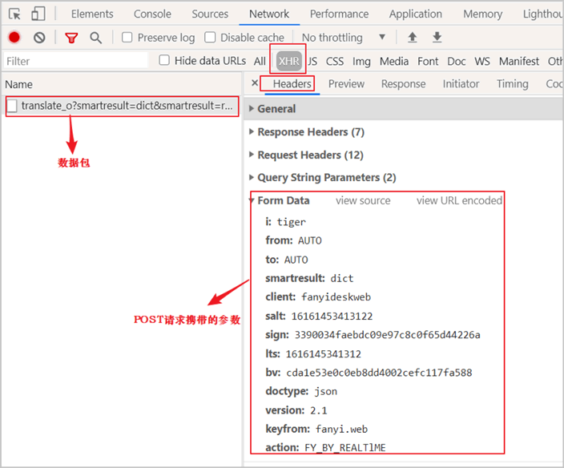
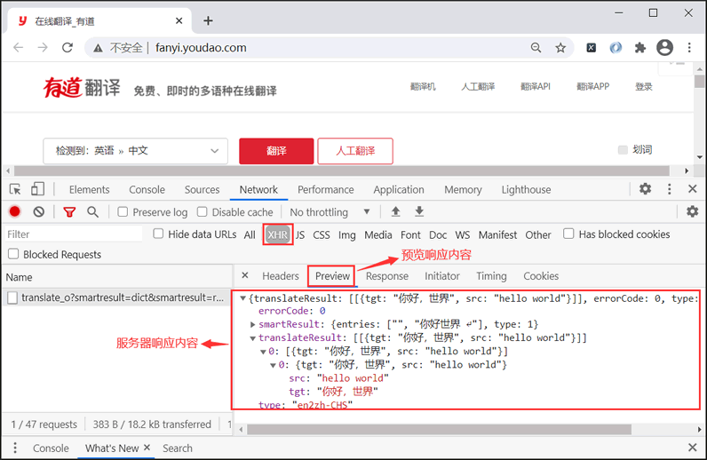
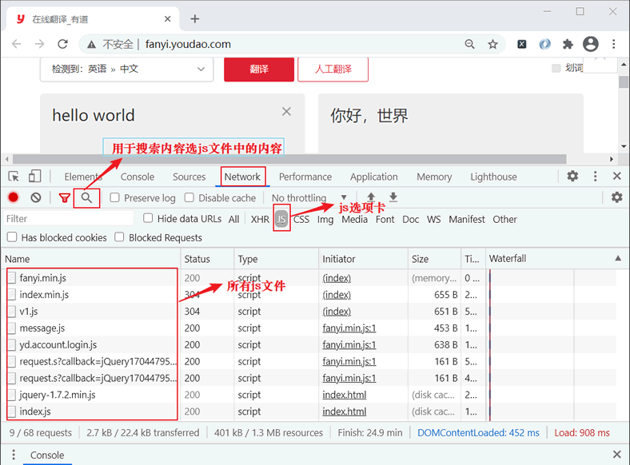
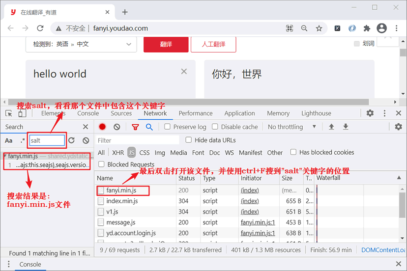
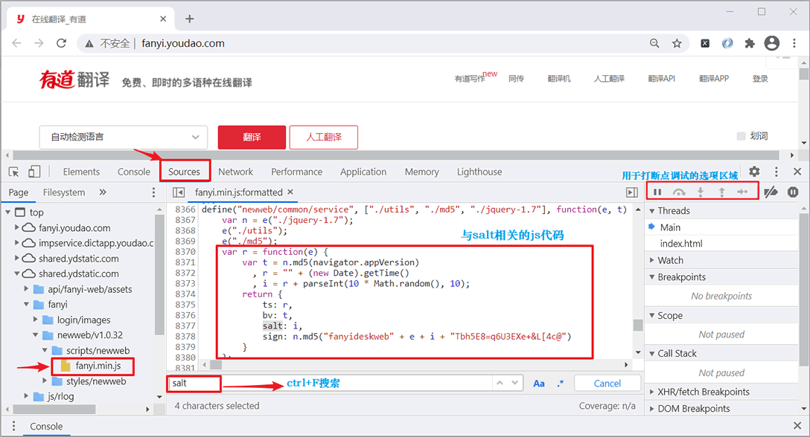

Python爬虫破解有道翻译
有道翻译是以异步方式实现数据加载的，要实现对此类网站的数据抓取，其过程相对繁琐，本节我以有道翻译为例进行详细讲解。
上一节《浏览器实现抓包过程详解》，通过控制台抓包，我们得知了 POST 请求的参数以及相应的参数值，如下所示：
并发现以下了规律：salt、sign、lts 总是变化的，而 bv 等其他参数是不变化的。其中 lts 代表毫秒时间戳，salt 和 lts 之间存在着某种关联，因为两者只有最后一个数字是不同的；而 sign 对应的值是一个加密后的字符串。
如果想要实现实时地抓取翻译结果，就需要将 salt 和 sign 转换为 用 Python 代码表示的固定形式。最后将所有参数放入到 requests.post() 中，如下所示：
点击上图所示的搜索按钮来检索 JS 代码，输入 "salt"，结果如图所示：
或者您也可以使用 Sources 选项卡将 fanyi.min.js 文件中的 JS 代码格式化输出，并使用 Ctrl+F 找到相应的 "salt" 位置，如下图所示：
上一节《浏览器实现抓包过程详解》，通过控制台抓包，我们得知了 POST 请求的参数以及相应的参数值，如下所示：

图1：有道翻译POST请求参数
图1：有道翻译POST请求参数
并发现以下了规律：salt、sign、lts 总是变化的，而 bv 等其他参数是不变化的。其中 lts 代表毫秒时间戳，salt 和 lts 之间存在着某种关联，因为两者只有最后一个数字是不同的；而 sign 对应的值是一个加密后的字符串。
如果想要实现实时地抓取翻译结果，就需要将 salt 和 sign 转换为 用 Python 代码表示的固定形式。最后将所有参数放入到 requests.post() 中，如下所示：
response = requests.post(url,data=data,headers=headers)其中 data 是字典格式参数，它用来构建 POST 请求方法的参数和参数值。
JS代码slat与sign
salt、sign 加密有两种实现方式：一种是通过前端 JS 实现，另一种是后台服务器生成加密串，并在返回响应信息时，将加密信息交给接浏览器客户端。但是，通过预览响应信息可知，并没有涉及 salt、sign 的信息，因此可以排除这种方法。

图2：预览响应信息
那么要如何找到关于salt、sign 的 JS 代码呢？此时就要用到另外一个调试工具选项卡—— JS。如下图所示：图2：预览响应信息

图3：js文件
图3：js文件
点击上图所示的搜索按钮来检索 JS 代码，输入 "salt"，结果如图所示：

图4：找到相关js文件
图4：找到相关js文件
或者您也可以使用 Sources 选项卡将 fanyi.min.js 文件中的 JS 代码格式化输出，并使用 Ctrl+F 找到相应的 "salt" 位置，如下图所示：

图5：Sources选项卡应用
提示：将所有 JS 代码 copy 下来，通过站长工具也可以实现格式化输出。
通过上述方法就找到了 salt 与 sign（两个参数项是在一起的）JS 代码，如下所示：
var r = function(e) {
var t = n.md5(navigator.appVersion),
r = "" + (new Date).getTime(),
i = r + parseInt(10 * Math.random(), 10);
return {
ts: r,
bv: t,
salt: i,
sign: n.md5("fanyideskweb" + e + i + "Tbh5E8=q6U3EXe+&L[4c@")
}
};
注意，找到上述代码是解决本节问题的关键，大家一定要要掌握方法。
Python代码表示参数
通过上述 JS 代码的简单分析可知： r 变量等同于 lts，salt 变量等同于 i，而 sign 是一个经过 md5 加密的字符串。接下来使用 Python 代码来表示上述参数，如下所示：#lts毫秒时间戳 str(int(time.time()*1000)) #salt， lts+从0-9的随机数 lts+str(random.randint(0,9)) #sign加密字符串 from hashlib import md5 #word为要翻译的单词等同于js代码中的"e" string = "fanyideskweb" + word + salt + "Tbh5E8=q6U3EXe+&L[4c@" s = md5() #md5的加密串必须为字节码 s.update(string.encode()) #16进制加密 sign = s.hexdigest()
完整程序实现
完整代码如下所示：
#coding:utf8
import random
import time
from hashlib import md5
import requests
class YoudaoSpider(object):
def __init__(self):
# url一定要写抓包时抓到的POST请求的提交地址，但是还需要去掉 url中的“_o”，
# “_o”这是一种url反爬策略，做了页面跳转，若直接访问会返回{"errorCode":50}
self.url='http://fanyi.youdao.com/translate?smartresult=dict&smartresult=rule'
self.headers={
"User-Agent": "Mozilla/5.0 (Windows NT 10.0; Win64; x64) AppleWebKit/537.36 (KHTML, like Gecko) Chrome/89.0.4389.90 Safari/537.36",
}
# 获取lts时间戳,salt加密盐,sign加密签名
def get_lts_salt_sign(self,word):
lts=str(int(time.time()*1000))
salt=lts+str(random.randint(0,9))
string = "fanyideskweb" + word + salt + "Tbh5E8=q6U3EXe+&L[4c@"
s=md5()
s.update(string.encode())
sign=s.hexdigest()
print(lts,salt,sign)
return lts,salt,sign
def attack_yd(self,word):
lts,salt,sign=self.get_lts_salt_sign(word)
#构建form表单数据
data={
"i": word,
"from": "AUTO",
"to": "AUTO",
"smartresult": "dict",
"client": "fanyideskweb",
"salt": salt,
"sign": sign,
"lts": lts,
"bv": "cda1e53e0c0eb8dd4002cefc117fa588",
"doctype": "json",
"version": "2.1",
"keyfrom": "fanyi.web",
"action": "FY_BY_REALTlME"
}
#使用 reqeusts.post()方法提交请求
res = requests.post(
url=self.url,
data=data,
headers=self.headers,
)
# res.json() 将json格式的字符串转为python数据类型
# 客户端与服务器数据交互以json字符串传递，因此需要将它转换为python数据类型
html=res.json()
print(html)
# 查看响应结果response html:{"translateResult":[[{"tgt":"hello","src":"你好"}]],"errorCode":0,"type":"zh-CHS2en"}
result=html["translateResult"][0][0]["tgt"]
print('翻译结果:', result)
def run(self):
try:
word=input('请输入要翻译的单词：')
self.attack_yd(word)
except Exception as e:
print(e)
if __name__ == '__main__':
spider=YoudaoSpider()
spider.run()
输出结果:
请输入要翻译的单词：大家好，这里是C语言中文网Python爬虫教程
lts，salt，sign 输出结果：
1616472092090 16164720920902 fcc592626aee42e1067c5195cf4c4576
html 响应内容:
{'type': 'ZH_CN2EN', 'errorCode': 0, 'elapsedTime': 25, 'translateResult': [[{'src': '大家好，这里是C语言中文网Python爬虫教程', 'tgt': 'Everybody is good, here is the Chinese Python crawler C language tutorial'}]]}
翻译结果: Everybody is good, here is the Chinese Python crawler C language tutorial
关注公众号「站长严长生」，在手机上阅读所有教程，随时随地都能学习。内含一款搜索神器，免费下载全网书籍和视频。

微信扫码关注公众号